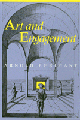

A new aesthetic theory based on aesthetic perception and participation with the arts
A new aesthetic theory based on aesthetic perception and participation with the arts


 A new aesthetic theory based on aesthetic perception and participation with the arts
A new aesthetic theory based on aesthetic perception and participation with the arts

|  |
Art and EngagementArnold Berleantpaper EAN: 978-1-56639-084-2 (ISBN: 1-56639-084-2) |
"Berleant has written the primer for a new aesthetics.... Readers will be delighted by the hundreds of thoughtful and pertinent examples form neolithic to contemporary and from non-Western as well as Western sources.... [Y]ou cannot help but admire the breadth of research and intellectual courage required to bring such a big book to light."
—The Journal of Aesthetics and Art Criticism
In this book Arnold Berleant develops a bold alternative to the eighteenth-century aesthetic of disinterestedness. Centering on the notion of participatory engagement in the appreciation of art, he explores its appearance in art and in aesthetic perception, especially during the past century. Aesthetic engagement becomes a key, both on historical and theoretical grounds, to making intelligible our experiences with both contemporary and classical arts. In place of the traditional aesthetic that enjoins the appreciator to adopt a contemplative attitude, distancing the art object in order to ensure its removal from practical uses, Art and Engagement examines the ways in which art entices us into intimate participation in its workings.
Beginning with the historical and theoretical underpinnings of the idea of engagement, Berleant focuses on how engagement works as a force in different arts. Successive chapters pursue its influence in landscape painting, architecture and environmental design, literature, music, dance, and film.
Art and Engagement argues forcefully for the originality and power of aesthetic perception. Demolishing the conceptual barriers erected by the Western world’s limiting tradition, the book discloses the condition of engagement that has always been present when our aesthetic encounters have been most effective and suggests a new direction for aesthetic inquiry.
"Art and Engagement presents a forceful argument for the originality and power of aesthetic perception. Demolishing the conceptual barriers erected by limiting Western traditions, the book discloses the condition of engagement involved in our most effective aesthetic encounters and suggests a new direction for aesthetic inquiry."
—American Society for Aesthetics Newsletter
"[Berleant] brings his full repertoire of knowledge to bear on this most interesting of problems: just how, precisely, do we derive aesthetic reaction from confrontation with a work of art? ...This is a closely studied argument beginning with theoretical studies into the idea of 'engagement'...appropriate for those interested in its application to aesthetic inquiry."
—Art Times
Illustrations
Preface
Acknowledgments
Introduction
Part I: Aesthetics and Experience
1. Experience and Theory in Aesthetics
2. The Unity of Aesthetic Experience
Part II: Engagement in the Arts
3. The Viewer in the Landscape
4. Architecture as Environmental Design
5. The Reader's Word
6. Musical Generation
7. Dance as Performance
Part III: Art and Reality
8. Cinematic Reality
9. The Realities of Art
10. Epilogue: Art and the End of Aesthetics
Notes
Index
 | Arnold Berleant is Professor Emeritus of Philosophy at Long Island University and the author of Aesthetics of Environment (Temple). |
© 2015 Temple University. All Rights Reserved. This page: http://www.temple.edu/tempress/titles/606_reg.html.